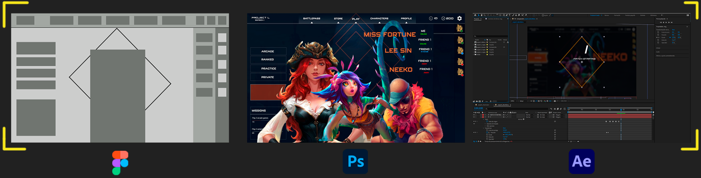

Personal Projects and Video Games
QA Projects
QA - Bank Aplication
This is a QA project for a fictitious mobile banking application where users can: log in, check their bank balance, transfer money and view transaction history. The objective is to ensure that all of these functionalities work correctly.
In this project I worked on:
Test plan: Ensure all mobile app key functionalities work as expected.
Test cases: TC001, TC002,TC003,TC004,TC005,TC006
Requirements Users can log in, check their bank balance, transfer money and view transaction history.
The objective is to ensure that all of these functionalities work correctly.
Traceability Matrix: Is a tool used to ensure that all specifed requirements are tested throught corresponding test cases.
Regression Test: Verify that the basic functionalities of the mobile banking application continue
to function correctly after the introduction of new functionalities or corrections.
Compatibility Test: The purpose of the compatibility test is to verify that the mobile banking application works correctly on a
wide variety of devices and operating systems, including both Android and iOS, in different screen resolutions and versions.
Performance Test: The purpose of this test is to ensure that the mobile banking application can handle a high number of
simultaneous users, process transactions in a reasonable time, and maintain a good user experience under heavy loads.
Accessibility Test: The purpose of these tests is to ensure that the mobile banking application is accessible to people
with disabilities, including
the use of screen readers, support for keyboard navigation, and appropriate color contrast.
Test Planning
Project: Mobile online banking application
Objective: Ensure all mobile app key functionalities work as expected.
Scope: Test functionalities such as : log in, check their bank balance, transfer money and view translation history.
Resources: 1 QA tester, test environment with 1 Android device with bank account installed, 1 IOS device with bank account installed.
Functionalities that will not be tested: Functionalities related to advanced security (with multifactor authentication)
Acceptance Criteria: The functionalities must respond within 2 seconds and show accurate information.
Risks: Compatibility problems with different devices or versions of mobile operating systems.
Schedule: Starts on february 1, 2025, en on february 15, 2025.
Milestones:
Test Planning (Feb 1 - 3 )
Test case creation (Feb 4 - 7)
Test execution (Feb 7 - 12)
Defect reporting (Feb 13 - 15)
| February | 1 - 3 | 4 - 7 | 7 - 12 | 13 - 15 |
|---|---|---|---|---|
| Test Planning | ||||
| Test Case Creation | ||||
| Test Execution | ||||
| Defect Reporting |
Test Cases
Test description: Verify that users can successfully log in with VALID credentials.
TC001
Preconditions: The bank app is installed / The user has a valid account.
Test steps: 1. Open the bank app 2. Click on the "Login" button 3.Enter a valid username into the “username field” 4.Enter a valid password into the “password field” 5.Click on the Login button
Expected result:The user should be redirected to the main user account page, where their current bank balance should appear.
Post conditions: The user should stay logged in.
TC002
Test description:Verify that users can’t successfully log in with INVALID credentials.
Preconditions: The banc app is installed /
The user has a valid account.
Test steps: 1. Open the bank app 2. Click on the "Login" button 3.Enter an invalid username into the “username field” 4.Enter an invalid password into the “password field” 5.Click on the Login button
Expected result:The user should not be able to access the application.
Post conditions: An error message should appear on the app indicating a credential issue.
TC003
Test description:Verify that users can successfully transfer money.Preconditions:The user is logged in / The user has enough money in the account.
Test steps: 1.Click on the “transfer money” button2.Select the origin account 3. Write the destination account 4.Enter the amount to be transferred5.Click the button “transfer” 6.The system should display a confirmation message with success and update the balance of the account
Expected result: The user should be redirected to the main user account page, where their current bank balance should appear.
Post conditions: The new balance should appear in the balance section and in the transaction history.
TC004
Test description:Verify that users can’t transfer money without enough money in the account .Preconditions:The user is logged in / The user doesn't have enough money in the account.
Test steps: 1.Click on the “transfer money” button2.Select the origin account 3. Write the destination account 4.Enter the amount to be transferred5.Click the button “transfer” 6.The system should display an error message indicating that the user doesn't have enough money in the account.
Expected result:The system should display an error message indicating that the user doesn't have enough money in the account and redirected to STEP 4.
TC005
Test description:Verify that users can’t transfer money in a INVALID destination accountPreconditions:The user is logged in
Test steps: 1.Click on the “transfer money” button2.Select the origin account 3. Write the destination account 4.Enter the amount to be transferred5.Click the button “transfer” 6.The system should display an error message indicating that the destination account is invalid.
Expected result:The system should display an error message indicating that the destination account is invalid. redirect him to STEP 3.
TC006
Test description:Verify that users can check the transaction historyPreconditions: The user is logged in.
Test steps: 1.Click on “account” button 2.Click on “account balance number”
Expected result:The transaction history should appear with all the transactions done in the past.
Requirements and Traceability matrix
Requirements
Users can log in, check their bank balance, transfer money and
view transaction history. The objective is to ensure that all of these functionalities work correctly.
Test Scenarios
1.Verify Log in
2.Verify transfer money.
3.Verify view transaction history
Traceability Matrix
| Requirement ID | Requirement description | Test case ID | Test case description | Status |
|---|---|---|---|---|
| R001 | User login with VALID credentials | TC001 | Verify User login with VALID credentials | Completed / Passed |
| R002 | User login with INVALID credentials | TC002 | Verify user can’t login with INVALID credentials | Completed / Passed |
| R003 | Users can successfully transfer money | TC003 | Verify user can successfully transfer money | In Progress |
| R004 | Users can’t transfer money without enough money in the account | TC004 | Verify user can’t transfer money without enough money in the account | Completed / Failed |
| R005 | Users can’t transfer money in a INVALID destination account. | TC005 | Verify user can’t transfer money in a INVALID destination account. | Completed / Passed | R006 | Users can check the transaction history | TC006 | Verify user can check the transaction history | Completed / Passed |
Results Inform
Issues Detected
R004 - TC004
Description:Users can’t transfer money without enough money in the account.
Error description:The system doesn't display an error message indicating that the user doesn’t have enough money in the account.
Steps to reproduce:
1.Click on the “transfer money” button.
2.Select the origin account
3.Write the destination account
4.Enter the amount to be transferred
5.Click the button “transfer”
6.See that the system doesn't display an error message indicating that the user doesn’t have enough money in the account.
Expected Result:The system should display an error message indicating that the user doesn't have enough money in the account and redirect him to STEP 4.
Current Result:The system doesn't display an error message indicating that the user doesn’t have enough money in the account and redirect the user to the main page.
Regression Test
Objective:Verify that the basic functionalities of the mobile banking application
continue to function correctly after the introduction of new functionalities or corrections.
Scope:The functionalities to be tested include login, balance check, transfers and transaction history check.
Criteria for selecting test cases:The selected test cases cover the core functionality of the application, modified
areas and code interdependencies.
Test cases list:TC001,TC02,TC003,TC004,TC005,TC006
Planning:Regression testing will be performed after each code update, at the end of each sprint, and each time a new release is made.
Tests Results:
- Test cases executed: 5
- Test cases Passed: 4
- Test cases Failed: 1
Conclusion:Regression testing has generally been successful, but functionality related to money transfers needs to be revised
Compatibility Test
Objective: The purpose of the compatibility test is to verify that the mobile
banking application works correctly on a wide variety of devices and operating systems,
including both Android and iOS, in different screen resolutions and versions.
Scope:
Compatibility test will be performed on:
Android devices: Version 10,11,12
iOS devices: Versions 13,14,15
Screen resolutioins:
Small screens: less than 5"
Medium screens: between 5" and 6.5"
Large Screens: over 6.5"
Test cases:
| ID | OS / Version | Resolution | Expected Result | Current Result | Status |
|---|---|---|---|---|---|
| TC001 | ANDROID / 11 | Small | Login successfully | [complete when the test is done] | Not started |
| TC001 | ANDROID / 10 | Small | Login successfully | [complete when the test is done] | Not started |
| TC001 | ANDROID / 12 | Small | Login successfully | [complete when the test is done] | Not started |
| TC001 | iOS / 13 | Small | Login successfully | [complete when the test is done] | Not started |
| TC001 | iOS / 14 | Small | Login successfully | [complete when the test is done] | Not started | TC001 | iOS / 15 | Small | Login successfully | [complete when the test is done] | Not started | ... | ... | ... | ... | ... | ... |
Performance test
Objective:The purpose of this test is to ensure that the mobile banking application can handle
a high number of simultaneous users,
process transactions in a reasonable time, and maintain a good user experience under heavy loads.
Performance test types
Load Testing: Test how the application responds when many users access it simultaneously.
Stress Testing:Assess how the application behaves when its maximum capacity is exceeded.
Soak Testing:Testing the system for an extended period to see how it handles a continuous load.
Response time Testing:Measure the time it takes the application to respond to actions such as logging in or checking balance.
Key Metrics
Response time:The time it takes the application to respond to different actions (login, balance inquiry, etc.).
Maximum concurrent users:How many users the application can handle before performance degrades.
Resource usage:Monitor CPU, memory and bandwidth usage.
Errors under load:Behavior of the application in the face of errors when there is a lot of load.
| ID | Test type | Description | Scenario | Metric | Expected result | Actual result | Scenario |
|---|---|---|---|---|---|---|---|
| PR001 | Load Test | Simulate 500 simultaneous users | Login of 500 users in 5 min | Response time < 2s | [fill] | [fill] | In progress |
| PR002 | Stress Test | Increase users up to 1000 | 1000 users for 10 min | Minimal errors and stability | [fill] | [fill] | In progress |
| PR003 | Check balance with low load | 10 users querying | Login successfully | Response time < 1s | [fill] | [fill] | In progress |
| PR004 | Response Time Test | Try the app for 24 hours | 200 simultaneous users | Stable response time (<2s) | [fill] | [fill] | In progress |
Accessibility test
Objective:The purpose of these tests is to ensure that the mobile banking application is accessible to people with disabilities,
including the use of screen readers, support for keyboard navigation, and appropriate color contrast.
Scope: The aspects to be evaluated include:
Screen readers to navigate the app.
Color contrast for visually impaired users.
Keyboard navigation.
| ID | Description | Steps to execute | Expected result | Actual result | State |
|---|---|---|---|---|---|
| AC001 | Navigation with screen reader | Use a screen reader to navigate the app | All elements must be read correctly by the screen reader | [fill] | In progress |
| AC002 | Adequate color contrast | Review the colors used for texts and buttons | Contrast must meet WCAG standards (4.5:1) | [fill] | In progress |
| AC003 | Keyboard navigation | Test the application using only the keyboard | All elements must be tab accessible | [fill] | In progress |
QA Automation
Login test
Scenario:Automate login testing on a web page (www.saucedemo.com).
Objective:These tests validate the login process of a web page, performing different tests to check for correct and incorrect user credentials.
- Selenium,NUnit,C#
using System;
using System.Collections.Generic;
using System.Linq;
using System.Text;
using System.Threading.Tasks;
using OpenQA.Selenium;
namespace LoginAutomation.Classes
{
public class LoginPageClass
{
private IWebDriver driver;
// Constructor: Inicialitza el driver
public LoginPageClass(IWebDriver driver)
{
this.driver = driver;
}
// Page Elements
private IWebElement UsernameField => driver.FindElement(By.Id("user-name"));
private IWebElement PasswordField => driver.FindElement(By.Id("password"));
private IWebElement LoginButton => driver.FindElement(By.Id("login-button"));
private IWebElement ErrorMessage => driver.FindElement(By.ClassName("error-message-container"));
// Accions de la pàgina de login
public void NavigateToLoginPage()
{
driver.Navigate().GoToUrl("https://www.saucedemo.com/");
}
public void Login(string username, string password)
{
UsernameField.SendKeys(username);
PasswordField.SendKeys(password);
LoginButton.Click();
}
public bool IsErrorMessageDisplayed()
{
return ErrorMessage.Displayed;
}
public string GetErrorMessageText()
{
return ErrorMessage.Text;
}
}
}
using LoginAutomation.Classes;
using NUnit.Framework;
using OpenQA.Selenium;
using OpenQA.Selenium.Chrome;
using System;
using System.Collections.Generic;
using System.Linq;
using System.Text;
using System.Threading.Tasks;
namespace LoginAutomation.Tests
{
public class LoginTestClass
{
IWebDriver driver;
LoginPageClass loginPage;
[SetUp]
public void Setup()
{
//Initialize Chrome Brower
driver = new ChromeDriver();
//Browser full screen
driver.Manage().Window.Maximize();
//Initialize Login Page
loginPage = new LoginPageClass(driver);
}
[Test]
public void LoginWithValidCredentials_ShouldNavigateToInventoryPage()
{
//1. Navigate to Login Page
loginPage.NavigateToLoginPage();
//2.Login into page
loginPage.Login("standard_user", "secret_sauce");
//3. Validate we arribe inventory page
Assert.IsTrue(driver.Url.Contains("inventory.html"), "Login was not successful");
}
[Test]
public void LoginWithInvalidCredentials_ShouldShowErrorMessage()
{
//1. Navigate to Login Page
loginPage.NavigateToLoginPage();
//2.Login into page
loginPage.Login("incorrect_user", "wrong_password");
//3. Validate we arribe inventory page
Assert.IsTrue(loginPage.IsErrorMessageDisplayed(), "Error Message not displayed");
Assert.AreEqual("Epic sadface: Username and password do not match any user in this service", loginPage.GetErrorMessageText());
}
[TearDown]
public void CloseTest()
{
//driver.Quit();
}
}
}
Product scrap
Scenario: These tests access a web page that displays a table of data (a product catalog) and accesses the table and retrieves specific information, such as all product names, all product prices and validate a product price with the name of an specific product.
Objective:- Use Selenium to access DOM (Document Object Model) elements, read table content, and perform assertions to verify that the data is correct.
- Selenium,NUnit,C#
using System;
using System.Collections.Generic;
using System.Linq;
using System.Text;
using System.Threading.Tasks;
using OpenQA.Selenium;
namespace LoginAutomation.Classes
{
public class InventoryPageClass
{
private IWebDriver driver;
//Constructor
public InventoryPageClass(IWebDriver driver)
{
this.driver = driver;
}
//Find web elemetns
private IReadOnlyCollection ProductItems
{
get
{
return driver.FindElements(By.ClassName("inventory_item"));
}
}
//Method to obtain a list of ProductNames
public List GetProductNames()
{
List productNames = new List();
foreach (var product in ProductItems)
{
var ProductName = product.FindElement(By.ClassName("inventory_item_name")).Text;
productNames.Add(ProductName);
}
return productNames;
}
public List GetProductPrices()
{
List productPrices = new List();
foreach (var product in ProductItems)
{
var Productprice = product.FindElement(By.ClassName("inventory_item_price")).Text;
productPrices.Add(Productprice);
}
return productPrices;
}
//Method for obtaining a specific procie of a product
public String GetProductPriceByName(string ProductName)
{
foreach (var product in ProductItems)
{
var name = product.FindElement(By.ClassName("inventory_item_name")).Text;
if (name.Equals(ProductName))
{
return product.FindElement(By.ClassName("inventory_item_price")).Text;
}
}
return null;
}
}
}
using LoginAutomation.Classes;
using NUnit.Framework;
using OpenQA.Selenium;
using OpenQA.Selenium.Chrome;
using System;
using System.Collections.Generic;
using System.Linq;
using System.Text;
using System.Threading.Tasks;
namespace LoginAutomation.Tests
{
public class InventoryPageTests
{
IWebDriver driver;
LoginPageClass loginPage;
InventoryPageClass inventoryPage;
[SetUp]
public void SetUp()
{
//Initialize web browser
driver = new ChromeDriver();
driver.Manage().Window.Maximize();
//Initilalize LoginPage
loginPage = new LoginPageClass(driver);
//Initialize inventory Page
inventoryPage = new InventoryPageClass(driver);
loginPage.NavigateToLoginPage();
loginPage.Login("standard_user", "secret_sauce");
}
[Test]
public void ShouldExtractAllProductNames()
{
// Obtain Product Names
List productNames = inventoryPage.GetProductNames();
// Check if theres produrcts in the page
Assert.IsTrue(productNames.Count > 0, "Theres no products in the page");
// Print Product Names in the console
foreach (var name in productNames)
{
TestContext.Out.WriteLine("Product: " + name);
}
}
[Test]
public void ShouldExtractAllProductPrices()
{
// Obtain Product prices
List productPrices = inventoryPage.GetProductPrices();
// Check if theres produrcts in the page
Assert.IsTrue(productPrices.Count > 0, "Theres no products in the page");
// Print Product Prices in the console
foreach (var price in productPrices)
{
TestContext.Out.WriteLine("Product Price: " + price);
}
}
[Test]
public void ShouldValidateProductPrice()
{
// Obtenir el preu d'un producte específic
string productName = "Sauce Labs Onesie";
string expectedPrice = "$7.99";
string actualPrice = inventoryPage.GetProductPriceByName(productName);
// Validar que el preu del producte és el que s'espera
Assert.AreEqual(expectedPrice, actualPrice, $"The price of the product {productName} it's not the expected.");
}
[TearDown]
public void TearDown()
{
// Quit Browser
//driver.Quit();
}
}
}
Form Test
Scenario:Automate interaction with an advanced form that includes text fields, drop-downs, checkboxes, and submit buttons.
Objective:Automatically complete the form by selecting options and checking boxes. Then, simulate submitting the form and verify that the results are correct.
- Selenium,NUnit,C#
using System;
using System.Collections.Generic;
using System.Linq;
using System.Text;
using System.Threading.Tasks;
using OpenQA.Selenium;
using OpenQA.Selenium.Support.UI;
using SeleniumExtras.WaitHelpers;
namespace LoginAutomation.Classes
{
internal class FormTestClass
{
private IWebDriver driver;
//Constructor
public FormTestClass(IWebDriver driver) {
this.driver = driver;
}
//Find WebElements
private IWebElement FirstNameField => driver.FindElement(By.Id("firstName"));
private IWebElement LastNameField => driver.FindElement(By.Id("lastName"));
private IWebElement EmailField => driver.FindElement(By.Id("userEmail"));
private IWebElement GenderRadioButton => driver.FindElement(By.XPath("//label[contains(text(), 'Male')]"));
private IWebElement DateOfBirthDate => driver.FindElement(By.Id("dateOfBirthInput"));
private IWebElement MobiledigitsField => driver.FindElement(By.Id("userNumber"));
private IWebElement SubjectField => driver.FindElement(By.XPath("//*[@id=\"subjectsContainer\"]/div/div[1]"));
private IWebElement HobbiesCheckBox => driver.FindElement(By.XPath("//label[contains(text(), 'Sports')]"));
private IWebElement AddressField => driver.FindElement(By.Id("currentAddress"));
private IWebElement SubmitButton => driver.FindElement(By.Id("submit"));
private IWebElement ConfirmationMessage => driver.FindElement(By.Id("example-modal-sizes-title-lg"));
private IWebElement app => driver.FindElement(By.Id("app"));
// Accions per omplir el formulari
public void EnterFirstName(string firstName)
{
FirstNameField.SendKeys(firstName);
}
public void EnterLastName(string lastName)
{
LastNameField.SendKeys(lastName);
}
public void EnterEmail(string email)
{
EmailField.SendKeys(email);
}
public void EnterDateofBirth(string dateofbirth)
{
DateOfBirthDate.SendKeys(Keys.Backspace);
DateOfBirthDate.SendKeys(Keys.Backspace);
DateOfBirthDate.SendKeys(Keys.Backspace);
DateOfBirthDate.SendKeys(Keys.Backspace);
DateOfBirthDate.SendKeys(Keys.Backspace);
DateOfBirthDate.SendKeys(Keys.Backspace);
DateOfBirthDate.SendKeys(Keys.Backspace);
DateOfBirthDate.SendKeys(Keys.Backspace);
DateOfBirthDate.SendKeys(Keys.Backspace);
DateOfBirthDate.SendKeys(Keys.Backspace);
DateOfBirthDate.SendKeys(dateofbirth);
app.Click();
}
public void SendSubjects(string subject)
{
SubjectField.SendKeys(subject);
}
public void SendAdress(string adress)
{
AddressField.SendKeys(adress);
}
public void SelectGender()
{
GenderRadioButton.Click();
}
public void EnterMobileNumber(string mobileNumber)
{
MobiledigitsField.SendKeys(mobileNumber);
}
public void SelectHobbyiesCheckBox()
{
HobbiesCheckBox.Click();
}
public void SendForm()
{
// Use JavaScript to view Submite Button
IJavaScriptExecutor js = (IJavaScriptExecutor)driver;
js.ExecuteScript("arguments[0].scrollIntoView(true);", SubmitButton);
SubmitButton.Click();
}
// Accions de la pàgina de login
public void NavigateToFormPage()
{
driver.Navigate().GoToUrl("https://demoqa.com/automation-practice-form");
}
public bool IsConfirmationMessageDisplayed()
{
return ConfirmationMessage.Displayed;
}
}
}
using LoginAutomation.Classes;
using NUnit.Framework;
using OpenQA.Selenium;
using OpenQA.Selenium.Chrome;
using System;
using System.Collections.Generic;
using System.Linq;
using System.Text;
using System.Threading.Tasks;
namespace LoginAutomation.Tests {
public class FormTest
{
IWebDriver driver;
FormTestClass formPage;
[SetUp]
public void SetUp() {
//Initialize Chrome Brower
driver = new ChromeDriver();
//Browser full screen
driver.Manage().Window.Maximize();
//Go to form URL
formPage = new FormTestClass(driver);
formPage.NavigateToFormPage();
}
[Test]
public void CompleteForm_ShouldSubmitSuccessfully()
{
//Complete form info
formPage.EnterFirstName("Marti");
formPage.EnterLastName("Mayolas");
formPage.EnterEmail("mmayolas99@gmail.com");
formPage.EnterMobileNumber("0622588567");
formPage.EnterDateofBirth("9 Sep 1999");
formPage.SendAdress("Barcelona, Spain");
//formPage.SendSubjects("Maths");
formPage.SelectGender(); //male
formPage.SelectHobbyiesCheckBox(); //Sports
formPage.SendForm();
// 3. Validar que s'ha mostrat el missatge de confirmació
Assert.IsTrue(formPage.IsConfirmationMessageDisplayed(), "The confirmation message didn't showed");
}
[TearDown]
public void TearDown()
{
//driver.Quit();
}
}
}
Alerts and pop-ups Test
Scenario:Automate the management of pop-ups, pop-up windows, or JavaScript alerts that appear on the page.
Objective:Write a test that interacts with pop-ups, for example, accepting or rejecting alerts, or managing the switching of tabs in the browser.
- Selenium,NUnit,C#
using LoginAutomation.Classes;
using NUnit.Framework;
using OpenQA.Selenium;
using OpenQA.Selenium.Chrome;
using System;
using System.Collections.Generic;
using System.Linq;
using System.Text;
using System.Threading.Tasks;
using SeleniumExtras.WaitHelpers;
using OpenQA.Selenium.Support.UI;
namespace LoginAutomation.Tests
{
internal class AlertsTest
{
IWebDriver driver;
[SetUp]
public void SetUp()
{
driver = new ChromeDriver();
driver.Manage().Window.Maximize();
}
[Test]
public void ShouldHandleAlertPopup()
{
driver.Navigate().GoToUrl("https://demoqa.com/alerts");
//Clicl button that generate Alerts
IWebElement AlertButton = driver.FindElement(By.Id("alertButton"));
AlertButton.Click();
// Canviar a l'alerta i acceptar-la
IAlert alert = driver.SwitchTo().Alert();
Assert.AreEqual("You clicked a button", alert.Text); // Validar el text de l'alerta
alert.Accept(); // Acceptar l'alerta
}
[Test]
public void ShouldHandleAlertPopupTimer()
{
driver.Navigate().GoToUrl("https://demoqa.com/alerts");
//Clicl button that generate Alerts
IWebElement AlertButton = driver.FindElement(By.Id("timerAlertButton"));
AlertButton.Click();
// Esperar fins que l'alerta sigui present
WebDriverWait wait = new WebDriverWait(driver, TimeSpan.FromSeconds(10));
wait.Until(ExpectedConditions.AlertIsPresent());
// Canviar a l'alerta i acceptar-la
IAlert alert = driver.SwitchTo().Alert();
Assert.AreEqual("This alert appeared after 5 seconds", alert.Text); // Validar el text de l'alerta
alert.Accept(); // Acceptar l'alerta
}
[Test]
public void ShouldHandleAlertPopupComfirmBox()
{
driver.Navigate().GoToUrl("https://demoqa.com/alerts");
//Clicl button that generate Alerts
IWebElement AlertButton = driver.FindElement(By.Id("confirmButton"));
AlertButton.Click();
// Esperar fins que l'alerta sigui present
WebDriverWait wait = new WebDriverWait(driver, TimeSpan.FromSeconds(10));
wait.Until(ExpectedConditions.AlertIsPresent());
// Canviar a l'alerta i acceptar-la
IAlert alert = driver.SwitchTo().Alert();
Assert.AreEqual("Do you confirm action?", alert.Text); // Validar el text de l'alerta
alert.Dismiss(); // Dismisses the alert
}
[Test]
public void ShouldHandleAlertPopupPrompBox()
{
driver.Navigate().GoToUrl("https://demoqa.com/alerts");
//Click button that generate Alerts
IWebElement AlertButton = driver.FindElement(By.Id("promtButton"));
AlertButton.Click();
// Esperar fins que l'alerta sigui present
WebDriverWait wait = new WebDriverWait(driver, TimeSpan.FromSeconds(10));
wait.Until(ExpectedConditions.AlertIsPresent());
// Canviar a l'alerta i acceptar-la
IAlert alert = driver.SwitchTo().Alert();
Assert.AreEqual("Please enter your name", alert.Text); // Validar el text de l'alerta
alert.SendKeys("Marti Mayolas");
alert.Accept(); // Dismisses the alert
}
}
}
Dynamic Properties Test
Scenario:Write a test that checks for an element that only appears after an asynchronous action (for example, dynamic content loading or a loading animation).
Objective:Objective: Use Selenium to ensure that the test correctly waits for elements to appear or disappear. This avoids fast execution issues that cause tests to fail.
- Selenium,NUnit,C#
using LoginAutomation.Classes;
using NUnit.Framework;
using OpenQA.Selenium;
using OpenQA.Selenium.Chrome;
using OpenQA.Selenium.Support.UI;
using SeleniumExtras.WaitHelpers;
using System;
using System.Collections.Generic;
using System.Linq;
using System.Text;
using System.Threading.Tasks;
namespace LoginAutomation.Tests
{
internal class DynamicProperties
{
IWebDriver driver;
[SetUp]
public void SetUp()
{
driver = new ChromeDriver();
driver.Manage().Window.Maximize();
}
[Test]
public void ShouldWaitUntilElementIsVisible()
{
driver.Navigate().GoToUrl("https://demoqa.com/dynamic-properties");
//Wait till the button is Visible and clickable
WebDriverWait wait = new WebDriverWait(driver, TimeSpan.FromSeconds(10));
IWebElement visibleButton = wait.Until(ExpectedConditions.ElementIsVisible(By.Id("visibleAfter")));
Assert.IsTrue(visibleButton.Displayed);
}
[Test]
public void ShouldWaitUntilElementIsEnabled()
{
driver.Navigate().GoToUrl("https://demoqa.com/dynamic-properties");
//Wait till the button is Visible and clickable
WebDriverWait wait = new WebDriverWait(driver, TimeSpan.FromSeconds(10));
IWebElement clickableButton = wait.Until(ExpectedConditions.ElementToBeClickable(By.Id("enableAfter")));
clickableButton.Click();
Assert.IsTrue(clickableButton.Enabled);
}
[TearDown]
public void TearDown()
{
// Tancar el navegador
//driver.Quit();
}
}
}
New windows and tabs Test
Scenario:Automate the management of pop-ups, pop-up windows, or JavaScript alerts that appear on the page.
Objective:Write a test that interacts with pop-ups, for example, accepting or rejecting alerts, or managing the switching of tabs in the browser.
- Selenium,NUnit,C#
using LoginAutomation.Classes;
using NUnit.Framework;
using OpenQA.Selenium;
using OpenQA.Selenium.Chrome;
using System;
using System.Collections.Generic;
using System.Linq;
using System.Text;
using System.Threading.Tasks;
namespace LoginAutomation.Tests
{
internal class WindowSwitchTest
{
IWebDriver driver;
[SetUp]
public void Setup()
{
driver = new ChromeDriver();
driver.Manage().Window.Maximize();
}
[Test]
public void ShouldOpenAnewTab_andSwitch()
{
driver.Navigate().GoToUrl("https://demoqa.com/browser-windows");
//Find elementButton element
IWebElement newTabButton = driver.FindElement(By.Id("tabButton"));
newTabButton.Click();
//Obtain all opened windows
string originalWindow = driver.CurrentWindowHandle;
IList windowHandles = driver.WindowHandles;
// Move to the new tab
foreach (string window in windowHandles)
{
if (window != originalWindow)
{
driver.SwitchTo().Window(window);
break;
}
}
// Assert that we are in the new tab
IWebElement heading = driver.FindElement(By.Id("sampleHeading"));
Assert.AreEqual("This is a sample page", heading.Text);
// Return to the original tab
//driver.SwitchTo().Window(originalWindow);
}
[Test]
public void ShouldOpenAnewWindows_Switch_and_Maximize()
{
driver.Navigate().GoToUrl("https://demoqa.com/browser-windows");
//Find elementButton element
IWebElement newWindowButton = driver.FindElement(By.Id("windowButton"));
newWindowButton.Click();
//Obtain all opened windows
string originalWindow = driver.CurrentWindowHandle;
IList windowHandles = driver.WindowHandles;
// Move to the new tab
foreach (string window in windowHandles)
{
if (window != originalWindow)
{
//driver.SwitchTo().Window(window);
driver.SwitchTo().Window(window).Manage().Window.Maximize();
break;
}
}
// Assert that we are in the new tab
IWebElement heading = driver.FindElement(By.Id("sampleHeading"));
Assert.AreEqual("This is a sample page", heading.Text);
// Return to the original tab
//driver.SwitchTo().Window(originalWindow);
}
[TearDown]
public void TearDown()
{
// Tancar el navegador
// driver.Quit();
}
}
}
UI/UX Projects
"Project L" (2XKO) UI concept
For my first personal UI/UX project, I decided to design an interface concept for Riot Games fighting game, Project L, which had been announced but with no visual details revealed at the time. This project allowed me to explore and implement new UI techniques using a combination of tools:
SPACE MATCH - Mobile Match 3 UI Concept
This project consisted of developing a UI concept for a match-3 game called Space Match. The goal was to create an attractive, intuitive and functional interface for mobile devices, while keeping the gameplay fast and fun. I used Adobe Photoshop and Illustrator to create the visual elements of the game, such as buttons, icons, and loading screens. I also used After Effects to animate menu interactions and transition effects, creating a smoother and more engaging experience for the player.

UI design in mHealth Applications: Analysis of mHealth applications and creation of an online library
This Project focuses on analyzing mobile applications in the health sector, specifically examining their user interface design, usability, and user experience. A comprehensive evaluation was conducted on various health-related mobile applications using a Likert scale-based checklist. The applications were classified into different categories, and a web page, "Biblioteca mSalut," was developed to facilitate easy access and consultation of these applications.
See MoreVideogame Projects
THE IRREGULAR - UE4 3D Video Game
The Irregular is a fast-paced magic FPS where players must use their magical abilities to reclaim their lands. Throughout the game, players can learn new spells, explore magical lands, face powerful bosses, and solve puzzles to advance the story.
The UI design focused on creating a visual experience that was consistent with the game's magical world, while maintaining intuitive usability. The interface needed to be clear and accessible so that players could manage their magical abilities and stats in the midst of the action without distractions. My goal was to design a UI that offered crucial information without hindering immersion and fast gameplay.
As a UI/UX Designer, I was responsible for the creation and implementation of the following elements:
Main Menu and Pause Menu: I designed a clear and functional interface that allows the player to navigate through the game options efficiently.
Player HUD: I implemented the HUD (Heads-Up Display) elements, displaying the player's magic skills, health, and stats in a minimalist and clear way.
Tutorial UI Elements: I designed the interactive components that guide players through the game mechanics, ensuring that new players can quickly learn the skills and controls.
One of the main challenges was integrating the necessary amount of information into the UI without overwhelming the player or distracting them from the fast and frenetic combat. I managed to solve this by designing a clean and modular HUD, prioritizing the most crucial elements (such as health and active skills).
See MoreGO ON - HYPERCASUAL ANDROID GAME - UNITY 2D
GoOn is a 2D hypercasual game for Android that challenges players to advance through obstacle-filled levels while using their skills and reflexes. The player must avoid obstacles and traps that vary in difficulty as they progress through the different levels, making use of simple but precise controls.
As a UI/UX Designer, my responsibilities included:
Designing and implementing the main menu and pause menu.
Designing and implementing the player HUD, which provides key information in a non-intrusive way during gameplay.
As a Game & Level Designer, my responsibilities included:
Creating various levels and designing obstacles that progressively challenge the player.
Implementing post-processing effects and a particle system to enhance the visual and dynamic experience of the game.
One of the biggest challenges was designing levels that were accessible to casual players, but challenging enough to keep them engaged. I achieved this by adjusting the progressive difficulty of the levels and adding engaging visual elements, such as particle effects and post-processing, that enhanced immersion without distracting the player.
See MoreGame Jams
RETRO DRIFT - UNITY 2D
"Retro Drift is an action video game in which players must defeat and dodge enemies by drifting their car.
The goal is to upgrade the car in the shop to make it more powerful and face increasingly difficult enemies.
This game was developed in just six days as part of the 'Juice Jam 2' event, where I was responsible for the entire development process.
The core of the game revolves around drifting. Players control a car that can dodge and defeat enemies through precise drifting maneuvers. As they progress, they can access a shop to upgrade the vehicle, adding more power and stamina, allowing them to take on stronger enemies.
During the development of Retro Drift, I took on all roles, including:
Gameplay Design: I implemented the drifting mechanics and car upgrades, fine-tuning the balance between difficulty and fun.
Art and Graphics: I created the retro visuals, using a vibrant color palette and minimalist visual effects.
Programming: I developed all of the game's code, implementing both the combat mechanics and the upgrade systems in the shop.
One of the biggest challenges was the limited time. I had to prioritize the most important features and maintain simplicity in the design, while ensuring that the game was entertaining and offered meaningful progression for the player. I opted for a minimalist retro graphical style that allowed me to keep the aesthetics appealing without spending too much time on complex details.
I developed Retro Drift using Unity as the main engine. For the graphics, I used Photoshop and a pixel-art style to give the game its signature
retro aesthetic. Additionally, I implemented the visual and particle effects directly in Unity to create a dynamic gameplay experience."
SprintTech -LudumDare 54 - UE4 3D
"SprintTech-LD is a first-person parkour game for PC, where every second counts. Players must master space and time to advance through challenging levels at high speed. Featuring fast and fluid parkour mechanics, the game tests both players' physical and mental skills.
As a UI/UX Designer, my responsibilities included:
Main Menu and HUD Design and Implementation: Created a functional interface that provides the player with key information in a clear and straightforward manner.
All 2D Art Design: Created all 2D visual elements, from menus to interactive elements.
Particle Systems: Implemented dynamic visual effects to enhance visual aesthetics and player feedback.
Quality Testing (QA): Conducted extensive testing of the game to ensure stability, detecting and resolving critical bugs.
SCALE THE BUBBLE - UNITY 2D - GMTK 2024 JAM
Scale the Bubble is a simple yet challenging game, where players must control a bubble as it moves through obstacles. The key is to change the size of the bubble to get around the obstacles, but be careful: if it is too big or too small, the bubble will burst! The goal is to advance as far as possible while handling the controls with precision.
One of the biggest challenges was balancing the difficulty of the level so that players could learn the game mechanics naturally, but without making the game too easy or too hard. To solve this, I adjusted the bubble physics and created a progressive difficulty curve. I also tested with different players to optimize the controls and make sure they were intuitive.
See MoreOther Projects
Ludum Journal - Game design Journal (inactive)
Ludum Journal is an online magazine dedicated to the world of video games, focusing on game and level design. It is aimed at both beginners looking to learn the fundamentals of game development, and experienced developers who want to delve deeper into advanced design and gameplay topics.
The goal of Ludum Journal is to provide valuable content for the game development community, covering topics such as level design, gameplay mechanics, difficulty balance, and creating immersive experiences. The journal strives to be an educational resource for designers at all levels of experience, offering practical advice and insights into the creative process in game development.
Research about visual accessibility in videogames
The objective of this work was to analyze the importance of visual accessibility in video games and identify the existing solutions implemented that help people with visual disabilities to fully enjoy video games and perform a demo in a video game applying different learned techniques.